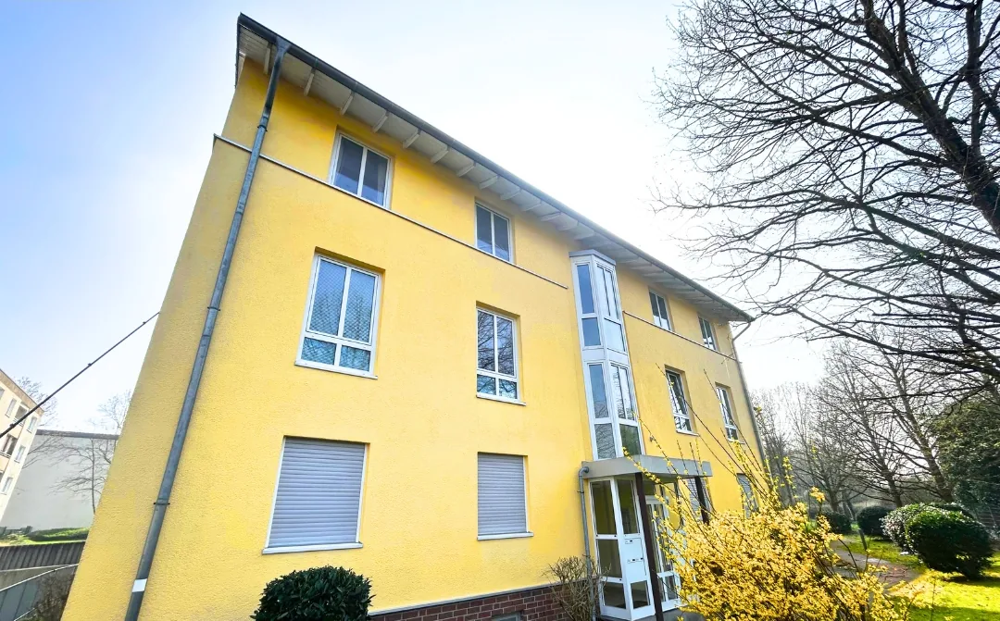
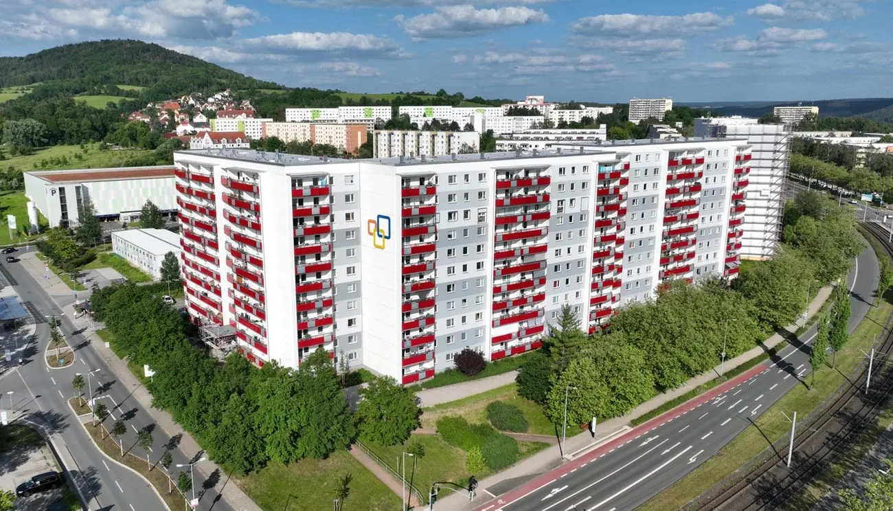
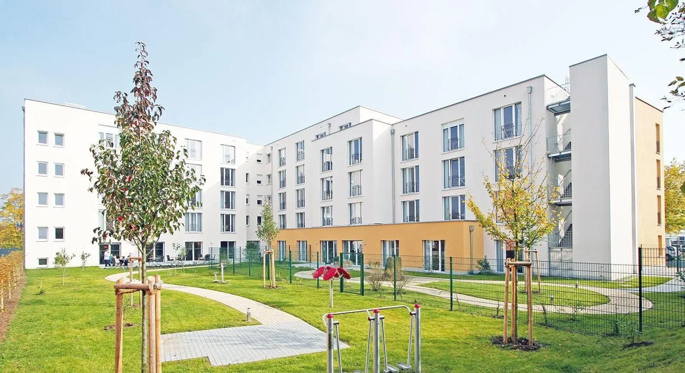
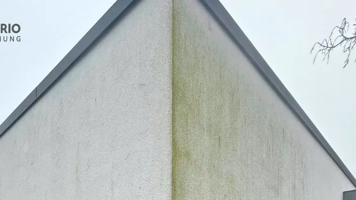
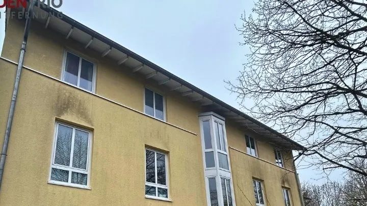
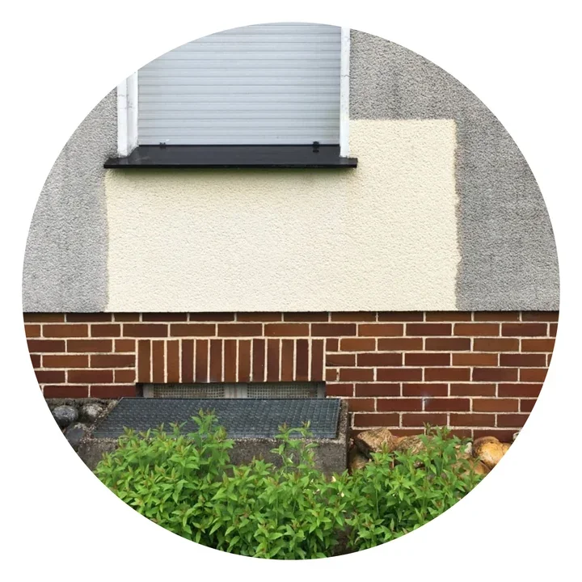

Professionelle Fassadenreinigung, deutschland- und europaweit
Der Neuanstrichkann warten.
Wir entfernen Algen, Pilze und Schmutz mit sanftem Wasserdruck und schützen Ihre Fassade danach bis zu 5 Jahre vor neuem Befall. Das kostet bis zu 70 % weniger als ein neuer Anstrich.
- bis zu70 %
günstiger als ein Neuanstrich. Die Reinigung verzögert ihn um viele Jahre.
Kosten vergleichen - bis zu5 Jahre
Langzeitschutz vor Wiederbefall
- bis zu12 m
lange Teleskoplanzen statt Gerüst
- Kosten0 €
für Probefläche, Angebot und Anfahrt
- Google5,0
bei 35 Bewertungen
Bewertungen lesen Büro: Mo. bis Fr., 8–16 Uhr
+49 178 812 08 73Rufen Sie an, oder schätzen Sie Ihre Fassade in einer Minute selbst ein.
Fassaden-Check starten
Drei Phasen bis zur sauberen Fassade
Das FassadenTrio-Verfahren reinigt in kurzer Zeit und verzögert den teuren Neuanstrich um viele Jahre.
- Phase 1
Reinigungsmittel auftragen
Unser eigens für Fassaden entwickeltes Reinigungsmittel wird großflächig aufgetragen: vom Boden mit bis zu 12 Meter langen Teleskoplanzen oder von der Hubarbeitsbühne aus. Es löst den Belag, die Fassade ist danach noch nicht sauber.
- Phase 2
Fassade abspülen
Sobald sich Algen, Schimmel und Pilze gelöst haben, spülen wir sie mit klarem Wasser ab. Der Druck ist so niedrig, dass der Putz unbeschädigt bleibt.
- Phase 3
Langzeitschutz auftragen
Der transparente Schutz dringt porentief ein und verzögert neuen Befall bis zu 5 Jahre. Er lässt sich jederzeit erneuern.
Acht Fassaden, vorher und nachher
Alle Aufnahmen zeigen Gebäude, die FassadenTrio gereinigt hat. Wählen Sie ein Objekt und ziehen Sie den Regler.

Vorher NachherMehrfamilienhaus, gelbe Putzfassade1 von 8
Kunden loben dort unter anderem das saubere Ergebnis, die freundliche Kommunikation und die Pünktlichkeit. Auch eine Hausverwaltung berichtet von reibungsloser Zusammenarbeit. Stand: November 2026.
Reinigen kostet bis zu 70 % weniger als streichen
Die Tabelle zeigt die drei Wege zu einer sauberen Fassade. Darunter rechnen Sie mit Ihrer eigenen Zahl.
| Reinigung mit FassadenTrio | Neuanstrich | Hochdruckreiniger in Eigenregie | |
|---|---|---|---|
| Kosten | bis zu 70 % günstiger als ein Neuanstrich | voller Preis für Farbe, Arbeit und Gerüst | Gerät und eigene Arbeitszeit |
| Gerüst | nicht nötig | in der Regel nötig | Leiter oder Gerüst für die oberen Bereiche |
| Belastung für den Putz | wenig Wasserdruck, der Putz bleibt unbeschädigt | keine | hoher Druck kann den Putz beschädigen |
| Schutz vor neuem Befall | Langzeitschutz für bis zu 5 Jahre | in der Regel keine Garantie gegen neuen Befall | keiner |
| Test am eigenen Haus | kostenlose Probefläche | nicht üblich | entfällt |
12.000 € ist nur ein Beispielwert. Tragen Sie die Summe aus Ihrem Malerangebot ein.
So viel können Sie mit der Reinigung gegenüber dem Neuanstrich sparen:
Rechenbeispiel auf Grundlage von „bis zu 70 % günstiger als ein Neuanstrich“. Was die Reinigung Ihrer Fassade tatsächlich kostet, steht in Ihrem kostenlosen Angebot.
Vom Boden bis zum Giebel, ohne Gerüst
- Keine GerüstkostenMit den Teleskoplanzen erreichen unsere Techniker die Fassade vom Boden aus. Hohe Gebäude reinigen wir von der Hubarbeitsbühne.
- Sanft zum PutzWir arbeiten mit wenig Wasserdruck. Abgetragen wird der Belag, nicht die Fassade.
- Schnell erledigtOhne Auf- und Abbau eines Gerüsts ist die Reinigung in kurzer Zeit durchgeführt.
- Schutz, der bleibtDer transparente Langzeitschutz dringt in die Poren ein und kann jederzeit erneuert werden.
- UmweltschonendEine Reinigung ist umweltfreundlicher als ein kompletter Neuanstrich.
Vom Einfamilienhaus bis zum Plattenbau
Wir begleiten Ihr Projekt von der Erstberatung über die Planung bis zur Ausführung und übernehmen alle Schritte selbst, in ganz Deutschland und europaweit.
 Mehrfamilienhäuser
Mehrfamilienhäuser Einfamilienhäuser
Einfamilienhäuser Wohnkomplexe
Wohnkomplexe
Plattenbauten Unternehmen
Unternehmen
Seniorenheime
Für Eigentümer
- Kostenlose Probefläche am eigenen Haus
- Bis zu 70 % günstiger als ein Neuanstrich
- Bis zu 5 Jahre Schutz vor Wiederbefall
Für Hausverwaltungen und WEGs
- Probefläche als Grundlage für die Entscheidung der Eigentümer
- Wohnkomplexe jeder Größe, zuverlässig und termingerecht
- Beratung, Planung und Ausführung aus einer Hand
Für Unternehmen und Einrichtungen
- Firmengebäude, Seniorenheime und Plattenbauten
- Hohe Fassaden von der Hubarbeitsbühne aus
- Auf Wunsch Fensterreinigung im Anschluss
Warum Fassaden grün werden
Links sehen Sie, woran Sie Befall erkennen. Rechts steht, wie er entsteht und warum frühes Reinigen den Putz schützt.

Grüner Belag

Dunkle Läufer unter Fenstern
Grauer Schleier
Rund 90 % aller Fassadenverschmutzungen entstehen durch Mikroorganismen wie Algen und Pilze.
- Tauwasser auf dem PutzBei gedämmten Fassaden ist der Oberputz wärmetechnisch vom Mauerwerk entkoppelt. Er kühlt aus, und es bildet sich schnell Tauwasser.
- Feuchtigkeit als NährbodenAuf der feuchten Oberfläche setzen sich Algen- und Pilzsporen fest und breiten sich aus.
- Schlagregen und kurze DachüberständeWo Regen ungehindert auf die Wand trifft, wächst der Belag besonders schnell.
- Folgen für den PutzDer Bewuchs kann den Putz angreifen, ihn porös machen und tiefe Verfärbungen hinterlassen. Je früher gereinigt wird, desto besser.
Das entfernen wir
- Algen
- Schimmel
- Pilzbefall
- Moos
- Flechten
- Feinstaub
- Straßenstaub
- Ruß
- Fett
Häufige Fragen
Wird meine Fassade bei der Reinigung beschädigt?
Nein. Wir arbeiten mit wenig Wasserdruck. Das Reinigungsmittel löst Algen, Schimmel und Pilze, danach spülen wir sie mit klarem Wasser ab. Der Putz bleibt unbeschädigt.
Muss ein Gerüst aufgebaut werden?
Nein. Unsere Techniker arbeiten mit bis zu 12 Meter langen Teleskoplanzen vom Boden aus. Bei höheren Gebäuden setzen wir eine Hubarbeitsbühne ein. Gerüstkosten fallen nicht an.
Wie lange bleibt die Fassade sauber?
Nach der Reinigung tragen wir einen transparenten Langzeitschutz auf. Er verzögert neuen Befall bis zu 5 Jahre. Der Schutz kann jederzeit erneut aufgetragen werden.
Was kostet die Probefläche?
Nichts. Die Probefläche ist kostenlos und Sie können sie jederzeit anfordern. Auch das Angebot und die Anfahrt berechnen wir nicht.
Was kostet die Reinigung?
Eine Fassadenreinigung ist bis zu 70 % günstiger als ein Neuanstrich. Den Preis für Ihr Gebäude nennen wir Ihnen in einem kostenlosen Angebot.
Wie läuft die Probefläche ab?
Sie fordern die Probefläche über das Formular oder am Telefon an. Wir reinigen ein kleines Stück Ihrer Fassade. Sie sehen das Ergebnis an Ihrem eigenen Haus und entscheiden danach, ob wir die ganze Fassade reinigen.
Warum nicht einfach neu streichen?
Weil die Reinigung bis zu 70 % günstiger ist und den Neuanstrich um viele Jahre verzögert. Sie ist außerdem umweltfreundlicher als ein kompletter Anstrich. Hinzu kommt: Eine Garantie gegen neuen Algenbefall geben Maler bei einem Neuanstrich in der Regel nicht.
Kann ich die Fassade selbst mit dem Hochdruckreiniger säubern?
Davon raten wir ab. Hoher Wasserdruck kann den Putz beschädigen. Unser Verfahren arbeitet deshalb mit wenig Druck, und der Langzeitschutz verzögert neuen Befall.
Für welche Gebäude ist die Reinigung geeignet?
Wir reinigen Einfamilienhäuser, Mehrfamilienhäuser, Wohnkomplexe, Unternehmensgebäude, Seniorenheime und Plattenbauten. Auf Wunsch reinigen wir anschließend auch die Fenster.
Wo ist FassadenTrio im Einsatz?
Unser Sitz ist in Südlohn im Münsterland. Im Einsatz sind wir in ganz Deutschland und in ganz Europa.
- Probefläche kostenlosSie sehen das Ergebnis an Ihrem Haus, bevor Sie sich entscheiden.
- Angebot kostenlosDen Preis für Ihr Gebäude nennen wir Ihnen vorab im Angebot.
- Keine AnfahrtskostenDie Anfahrt berechnen wir nicht.
- Bis zu 5 Jahre SchutzDer Langzeitschutz verzögert neuen Befall bis zu 5 Jahre.
Kostenlose Probefläche anfordern
Wir reinigen ein Stück Ihrer Fassade, kostenlos. So sehen Sie das Ergebnis an Ihrem eigenen Haus, bevor Sie sich entscheiden.

- Telefon
- +49 178 812 08 73
- info@fassaden-trio.de
- Bürozeiten
- Mo. bis Fr., 8–16 Uhr
- Anschrift
- Robert-Bosch-Straße 47, 46354 Südlohn